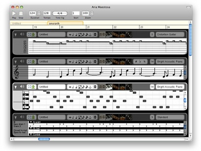

Aria Maestosa is an open-source (GPL) midi tracker/editor. It lets you compose, edit and play midi files with a few clicks in a user-friendly interface offering keyboard, guitar, drum and controller views.
Aria Maestosa runs on Mac OS X 10.4+ (PPC and Intel), Windows XP+ and Linux (Alsa). It has translations for English, French, German and Italian.
Screenshots

Mac OS X Linux Windows
Download the latest version (Changelog).
Aria Maestosa was greatly inspired by Easy Beat, designed and produced by Günther Blaschek, (c) and distributed by Ergonis Software. Also check it out, it's a great app!
For another great open-source music editor, check TuxGuitar!
About translations: If would like to translate Aria, you're welcome! Check the "international" directory in the source, it will contain more information.